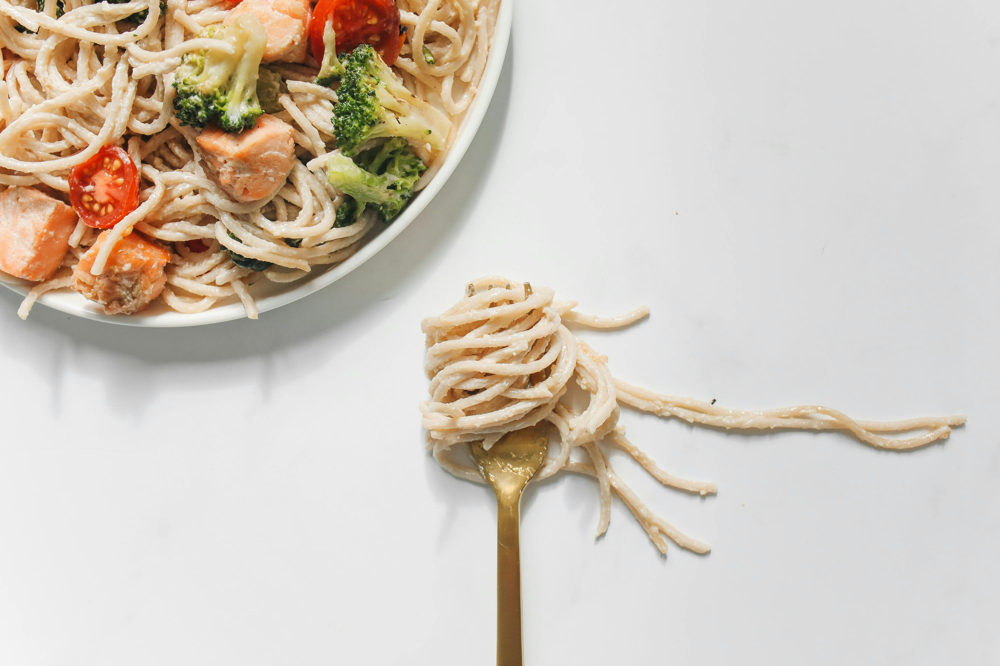

Spaghetti Carbonara
Description
Spaghetti Carbonara is a creamy, savory dish made with eggs, Parmesan cheese, pancetta, and black pepper. It's a quick and delicious recipe that brings the authentic taste of Rome to your table.
Ingredients
- Spaghetti
- Eggs
- Grated Parmesan cheese
- Pancetta or bacon
- Black pepper
- Olive oil
Steps to Prepare Spaghetti Carbonara
- Cook spaghetti until al dente.
- Fry pancetta in olive oil until crispy.
- Whisk eggs and Parmesan in a bowl.
- Toss hot spaghetti with pancetta, remove from heat, and stir in the egg mixture.